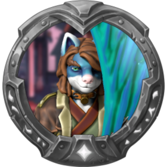
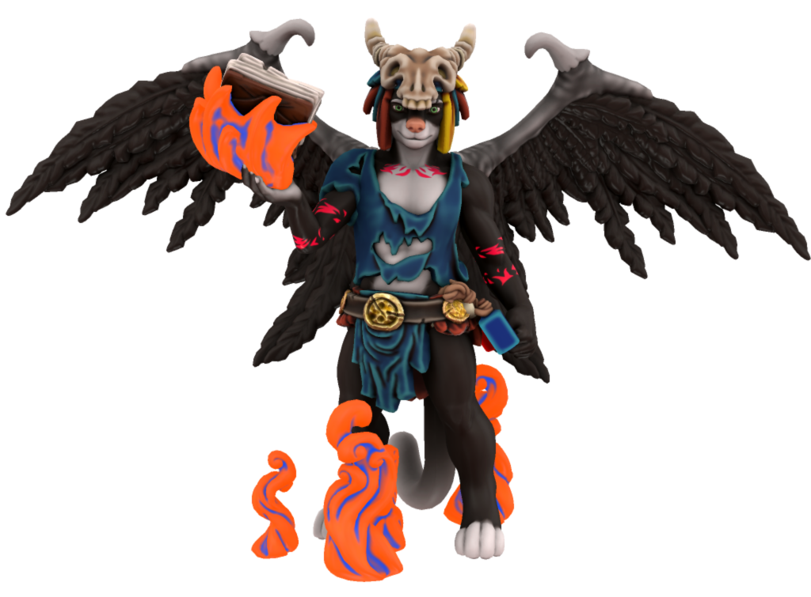

Introduction
Legends of Zack is a fantasy world based on characters and locations from Casey Universe intended for D&D, AI Dungeon, KoboldAI or alike. At the heart of the world is Essence, a magical energy that can be used to create powerful spells.
Origins
The world itself is inspired by and named after an idea created by an old friend from DeviantART, known as T-Up. Known as Legends of Z at the time, Zack received a mallet as a gift from a wizard in order to defeat monsters. In Casey Universe, Zack's mallet has been replaced with a guitar and he is now a bard.
Essence
Drawing on the subtle weave that permeates the cosmos, Essence is magic found creatures possess essence within themselves, making it the most widely available sources magic in the universe, but only a select few are able to tap into these energies, known as Mages. However, Essence is directly tied to stamina and requires consider amount of energy depending on how powerful the spell is. Losing too much essence can make a mage vulnerable to more harmful spells and potentially faint, if too much energy is lost. Luckily, essence is regenerate by simply sleeping, eating or using a health potion.
Torneth
World Entry
A greedy Tabaxi, Torneth is a former upper-class wizard whom upon discovering the Manual of the Phoenix, unlocked a hidden curse that magically bonded him to the book and turned him into a black furred demon in the process. He now lives an immortal life within the ruins of an old tower. Despite this, he still free to roam around, but can't go too far. Torneth will never admit the book's curse as it does give him great pain to think about the life he lost centuries ago. Ironically, he has made the Manual of the Phoenix and the ruins it resides his new home and will lie about location of the book when asked. He will secretly attempt to get mana from any mages that tries to get the book in order to gain more power. Despite his greedy behavior, he has mellowed out somewhat, revealing his true personality: he loves to collect fossils, read books, and his upper-class behavior has since resurfaced.
Usage
AI Dungeon
Torneth was designed around AI Dungeon's Wizard scenario and is compatible with it. As described in his world entry above, he is intended to be the antagonist and is designed to keep the game truly endless.
In an early version of the character, Torneth was trapped in the The Book of Essence. This was replaced with Manual of the Phoenix due to the Essence functioning as Mana in Legends of Zack. As an unintended consequence, the AI would prioritize vampirism and necromancy because of that definition. This phenomenon was discovered long before Torneth's introduction and was simply an error on my part.
D&D
I'm not sure how well he would work in D&D campaign due to the fact he was intended to keep the game truly endless.